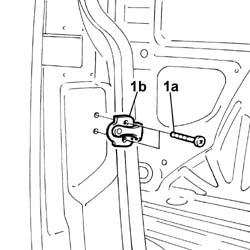

7020D42 sliding door lock striker - r+r
- Path
- Procedures > 70 FITTINGS > 7020 LOAD CARRYING COMPARTMENT DOORS > 7020D sliding door closure devices > 7020D42 sliding door lock striker - r+r
- Kind
- repair procedure (removal / refitting; the operation number is the code)
- Applies to
- all engines; all production periods
- Interactive page
- https://sloeber94.github.io/elrnDB-fDbl/en/#/2585069
Applies to: all engines; all production periods
 Removing
Removing
 Refitting
Refitting1. Undo the bolts (1a) and remove the striker (1b).

Applies to: all engines; all production periods
Refitting
RemovingFit the striker and loosely tighten the fixing bolts.
Check, by closing the door, that the door lock and striker are properly aligned.
If they are not, adjust the position of the striker, using the slotted holes for securing the bolts.
Tighten the striker bolts to torque.
 | Fastening | Component | Ø | Value (daNm) |
|---|---|---|---|---|
- | Bolt | SLIDING DOOR LOCK STRIKER | M8 | 2.4 |